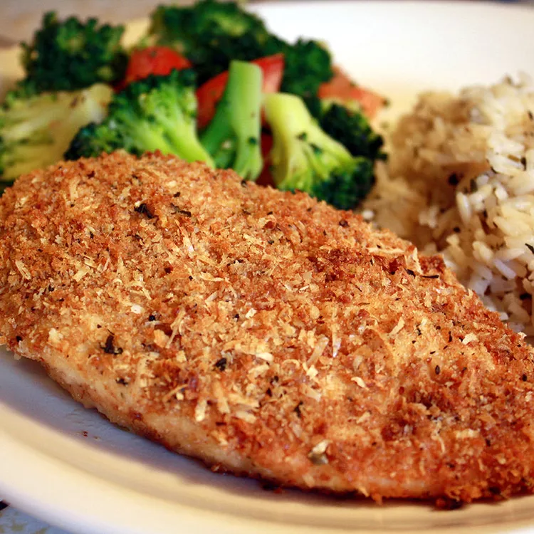

Garlic Chicken Recipe
Home

Description
This garlic chicken is simple to make — just dip and bake.
Garlicky goodness in a breaded chicken dish. Yum!
Ingredients
- Crushed Garlic
- Italian-Seasoned Bread crumbs
- Olive Oil
- Seasonings
- Skinless, Boneless Chicken breast halves
- Parmesan Cheese
Steps
- Gather the ingredients. Preheat the oven to 425 degrees F (220 degrees C).li>
- Heat olive oil and garlic in a small saucepan over low heat until warmed, 1 to 2 minutes. Pour into a shallow bowl.
- Combine bread crumbs and Parmesan cheese in a separate shallow bowl.
- Use tongs to dip chicken breasts in olive oil-garlic mixture, then coat evenly in bread crumb mixture. Transfer coated chicken to a shallow baking dish.
- Bake in the preheated oven until no longer pink and juices run clear, 30 to 35 minutes. An instant-read thermometer inserted into the center should read at least 165 degrees F (74 degrees C).